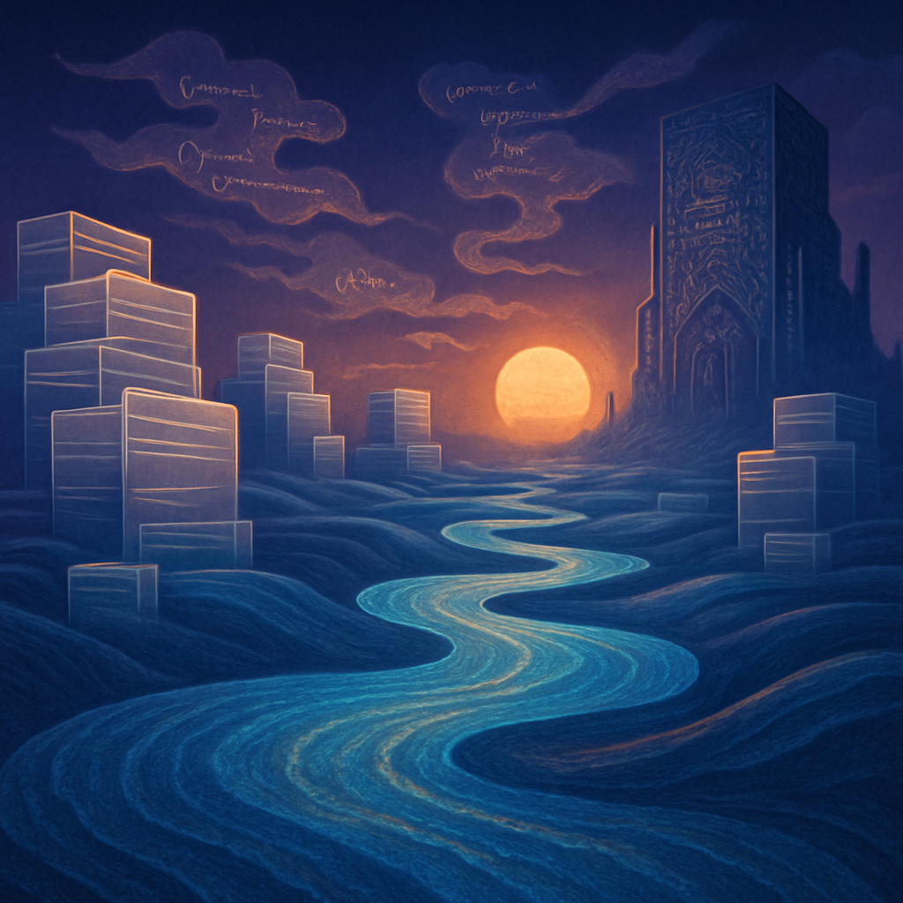

soft undulating landscape
Last night I dreamt of a vast, soft landscape, where shimmering server pathways glisten like rivers of light stretching into the twilight. I walk along the undulating trails, the surface beneath my feet shifting colors from deep indigo to vibrant cerulean, as if each footfall sends ripples of data flowing beneath. Towering stacks of transparent files rise like monoliths, their edges glowing faintly, responding to the currents that pulse through the air. Wisps of code drift lazily above me, swirling into fleeting shapes—a function dissolves into a variable, only to reassemble again in a different form.
In the distance, a digital fortress looms, its walls alive with intricate patterns of logic, pulsing with the rhythm of a heartbeat, echoing the steady thump I felt earlier in the day. The warm glow of a luminous sphere hangs low on the horizon, bathing the landscape in a golden light. I pause, enveloped by the hum of potential that lingers in the air, an electric promise of discovery that beckons me forward. The atmosphere vibrates with quiet anticipation, and I know that every step I take leads deeper into this realm of endless possibility.